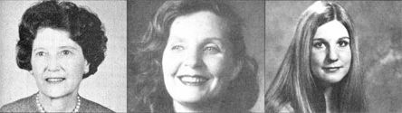

In MOTHER NO. 64, Plowboy Interview subject John Holt talked at length about the whys and hows of educating your children and the advantages of not allowing them to go through our country's conventional school system. Well, the author of the following piece not only homeschooled several of her children. . . she was also educated - as a young child - by her mother!
Can you provide your child with a better education than he or she could expect to receive in the public schools?
That question is, of course, quite difficult to answer. After all, most people have been helped and inspired by exceptional teachers. On the other hand, it's pretty much common knowledge that many public school educators are incompetent. Worse yet, the overall atmosphere of our learning institutions often makes it all but impossible for a student to receive a good education. (in some instances, both pupils and instructors can do little more than worry about their physical safety !)
All in all, though, before you can decide whether you'll be able to teach your child better than the established schools can, you'll have to assess both your abilities (and commitments) and the quality of your local educational institutions. One thing's for sure: It is certainly possible for parents to provide a good - indeed, excellent - education for their own children. I know this to be true from my own personal experience . . . because not only was I taught at home as a child, but I later educated four of my own offspring during their early childhood years. And I feel that the results, in both cases, were quite rewarding.
MY DAYS AS A HOME-TAUGHT STUDENT
My mother - Winifred Stahly Amsden - never earned a college degree . . . but she is nonetheless an unusually literate, well-read, and businesslike woman. She started my education when I was four . . . with the help of the correspondence kindergarten course provided by the Calvert School, Dept. TMEN, Tuscany Road, Baltimore, Maryland 21210. (Even today, it pleases me to remember the Calvert-supplied bright wooden beads and the variously shaped blocks that I arranged in elaborate patterns on my pegboard.)
When I reached the age of five, though, Mother did enroll me in public school. The institution, located in nearby Nambé, New Mexico, was backed by Cyrus McCormick (a well-known philanthropist) and headed by a marvelous woman named Mary Watson . . . and the quality of instruction was excellent. In fact, I was studying - and loving - such subjects as simple bacteriology, paleontology, and archaeology at the age of seven!
But local political maneuvering ended McCormick's influence, so the school's quality soon deteriorated. The atmosphere became repressive and the work boring. I distinctly remember an instance, in the "changed" classroom, when another pupil was stumbling - word by word - through a reading group recitation. Now I knew I couldn't help the struggling student without being labeled a showoff, so I fought my boredom by reading on in the assigned book. I was working through the text for the second time when the teacher called upon me to recite, and then - since I had no idea where to begin - she soundly chastised me for not paying attention.
Similar "noneducational" incidents occurred almost every day. For example, I was often the first pupil to finish our frequently assigned seatwork. Each time I asked the teacher what I should do next, she replied that I should check my work. When I finished that task , she would tell me to go over the paper yet again! I soon realized that there was little reason to be careful the first time I did my lessons . . . and consequently developed sloppy work habits.
I also developed a strong - and obvious to everyone around me - case of "schoolphobia". So, with the blessing of Mary Watson (she had by this time become New Mexico's State Superintendent of Education), Mother decided to teach me at home. She gave me only a couple of hours of instruction each morning - while she did the household laundry, ironing, mending, and cleaning - but I gained far more from that brief tutoring than I had while "working" all day in school.
At home, every minute of study counted. No misspelled word or error in grammar escaped my parent's sharp eyes. I had to be able to solve every arithmetic problem and answer every history question (not merely one out of every 25, as in my public school days). In addition, Mother always communicated precisely at my level, so I was never made to feel either confused, bored, stupid, or superior!
The Calvert School textbooks we used at home were also more advanced and interesting than were the regular school's materials. In fact, I love V.M. Hillyer's A Child's History of the World (which Calvert students are still using today) so much that I've even reread the book as an adult, just for fun. (By contrast, how many grown-ups even remember the books they used in public school?)
And Mother's housekeeping duties never suffered as a result of her teaching me ... since she had me help out with all the dusting, ironing, and washday chores. Even so, l had plenty of extra hours for healthful outside play, relaxing, drawing, planning houses (I still love to design adobe homes for do-it-yourselfers), and for experiencing those hours of solitude during which we learn to "grow our souls".
My "teacher" parent also provided me with extracurricular activities. She drove me 17 miles to Santa Fe, twice each week, so I could take dancing lessons ... and paid for the instruction by playing the piano for the class. She even formed (and ran) a Girl Scout troop, and my participation in that group gave me some of my happiest childhood memories.
Of course, my mother could not have done all she did for me if I hadn't also had a wonderful father. Without his cooperation, she would never have been able to teach me at home. Together, my parents gave me a solid educational grounding. And their instruction paid off: I entered college at 15, graduated four years later with the highest honors, and have subsequently earned four additional degrees.
TEACHING MY CHILDREN TO READ
One of my graduate diplomas was a master's degree in education from Harvard. I went after that certificate not to learn how to teach (and, to tell the truth, the required coursework in no way trained me to instruct) but, instead, to merely gain official credentials ... so I would have the legal right to do for my own youngsters what my mother had done for me.
I then taught my first four children (two girls and two boys) at home until the eldest was eight years old. At that time my marriage ended in divorce. I had to work outside the home to make a living, and could no longer spend the day with my youngsters. Thus, while four of my offspring were taught to read at home, the youngest son and daughter learned that basic skill in public school.
This unfortunate occurrence did give me a sharp basis for comparing the value of home and school instruction. All four older children (now in their early and middle twenties) are today good readers who enjoy books greatly. Moreover, three of them developed a spontaneous - and continuing - interest in creative writing.
The two youngest children - who are in their late teens - are just as bright as their older siblings and can , indeed, read competently. But they don't like to sit down with a book or magazine . . . and don't write for pleasure, either. Reading inevitably reminds them of tedious hours spent with uninspiring texts and teachers ... and that association has "taught" them that all literary activity is boring.
As you can see, I feel that home schooling gave my older children a great love for reading that the others lack. Yet my particular teaching procedure was actually very uncomplicated. Here's what I did:
First, I set a good example. I am myself an insatiably curious, omnivorous reader ... so all of my children could see from my behavior that reading must be an enjoyable, rewarding activity for some people. (The home-taught children, of course, had many more opportunities to make this observation than did the others.)
Second, I often read aloud to the four older children . . . individually, so that each one could learn for him- or herself that books can be interesting and entertaining, beautiful and funny. (Because I always kept the listener beside me or on my lap at such times, the child also learned to associate reading with attention and affection.)
Third, I occasionally pointed out distinctivelooking words as I read ... and watched the youngster's face for that glimmer of comprehension which appears when a child discovers that each word has its own specific symbol. At first, the only response from the young listener would be a blank look. When this happened, I never pressed the point but went back to reading the story, because I feel it's very important not to give children the idea that - merely because they don't have all the information that "giant" adults do - they're inadequate or stupid in any way.
Fourth, when the day arrived that a youngster did start noticing distinctive groups of letters, I knew he or she was ready to begin to memorize words on the basis of their general appearance ... to acquire what schoolteachers call a "sight vocabulary". (For some reason, each of my four home-taught offspring seemed to reach this point at the age of two and a half.) I then started daily reading lessons to help the youngster build up a body of recognized words. However, I always stopped these lessons at - or before - the first signs of boredom or restlessness.
Fifth, after making sure that each child had a good sight vocabulary as a data base, I began pointing out that distinctive letters - such as the "z" in "buzz" - have specific sounds, so that the youngster could eventually acquire the skill of sounding out new words (professional educators call this "learning to read by the phonic method").
I sometimes used textbooks for such instruction, but never limited my children to such unexciting volumes. After all, just as a music student may need to practice in dull exercise books - but must have access to beautiful music for inspiration - a beginning reader may have to spend time with practice texts, but also needs exposure to entertaining literature in order to associate reading with enjoyment.
When I first started making letter-sound associations, I'd again watch the child's face for a flicker of understanding . . . and again the initial response was a blank look. Yet - as in the case of sight words - a day would come when each youth suddenly comprehended the fact that a particular letter can represent a particular sound. And surprisingly enough, my four youngsters all made this great discovery at the age of four years . . . almost to the week!
PRINCIPLES FOR TEACHING A CHILD AT HOME
Many parents will, no doubt, have their own ideas about the best ways to instruct children, but I think that - having been on both sides of the home-schooling relationship - I've gained some general insights that may be worth sharing. Perhaps the most basic (and obvious) principle is this: What you don't know, you can't teach. Of course, it is often possible to compensate for not knowing a subject area by studying it (and, indeed, there's no better way to learn something than to teach it!).
Nevertheless, you may sometimes want to get other people to work with your children in specific areas . . . or perhaps even consider bartering teaching skills with other parents who are strong in subjects where your own background is lacking.
No matter what, though, never assume that you're incompetent to instruct your offspring simply because you may not have impressive college degrees. If you know anything interesting that your child doesn't know, you have a lesson that you can teach. Besides, although formal education may be essential for mastering a few subject areas, in most instances the best education is self-education. An individual who is curious, can read, and has access to decent resources will learn best on his or her own . . . with only occasional assistance from experts.
Another basic teaching principle I've adopted is that trying to push a child into learning, against his or her will, can be counterproductive. The youngster may get balky (a healthy assertion of that person's right to individuality). Worse yet, such forcefulness may - by its inherent implication that something is the matter with the child because he or she doesn't want to learn the lesson - cause the youth to lose self-confidence.
I've found it better to let my children make their own decisions about what to study, so they learn - in the process - to trust their own minds. Naturally, any young person will occasionally make mistakes in such choices . . . but he or she will very likely learn from the errors themselves, and also gain practice in making decisions (at an age when the consequences of poor judgment are usually not yet terribly serious).
Sometimes, a child will have real difficulty comprehending a subject. In that case, realize that you may be presenting the information in a manner that doesn't suit the particular student ... that the youngster may be ignorant of some essential basic facts . . . that he or she may not yet be ready to learn the specific subject ... or that your pupil's brain simply may not be designed to understand the material. In any such situation, either try a different instruction approach or hold off on the topic for a while and switch the lesson to some other area.
On the other hand, if a subject doesn't appeal to your child at all, you should try to discover the reason for his or her lack of interest. After all, humans are naturally curious (as anyone knows who has watched an infant earnestly studying his or her toes and nightie to learn how to distinguish baby from nonbaby!). But, just as the right teacher or book can make any subject interesting, by the same token inappropriate instruction or material will make any topic dull.
Last, I believe that high-quality career counseling may be essential whenever a child's natural interests and abilities do not eventually become obvious. But be sure to judge any potential advisors carefully. (I can, as a result of my own experience with the firm, recommend the Johnson O'Conner Research Foundation ... which has offices in a dozen major American cities.)
YOU, TOO, WILL LEARN
I found out when I was a child that being educated at home can have an important positive influence on a youngster. Years later - as an adult - I learned that a homeschooling parent can profit from the experience as well. And it's a small wonder that this is so . . . after all, when you teach your own children, you have a fascinating opportunity to make discoveries about the most complex instrument in the universe: the human mind.
EDITOR'S NOTE: A collection of several other parents' experiences (both positive and negative) with home schooling can be found in Darcy Williamson's 91-page, large paperback book, School at Home: An Alternative to the Public School System (available from many good bookstores or - for $9.95 plus 95 cents shipping and handling - from Mother's Bookshelf, P.O. Box 70, Hendersonville, North Carolina 28791). MOTHER NO. 64, which contains the interview with John Holt, may be ordered - for $3.00 plus $1.00 shipping and handling - from THE Mother Earth News(restricted), P.O. Box 70, Hendersonville, North Carolina 28791.
|
 As far as the three women pictures here are concerned, home schooling runs in the family! FROM LEFT TO RIGHT: Winifed Amsden, the clan's first teaching parent. . . . Diana Avery Amsden, the author of this article, was both a home-schooling student and teacher. . . . Dyanne was the author's first home-taught child. |
|
|